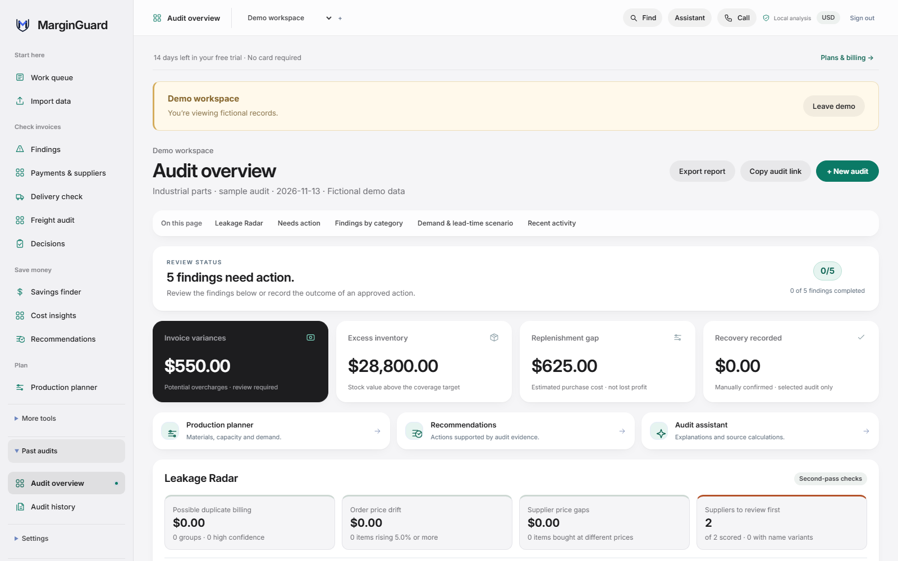
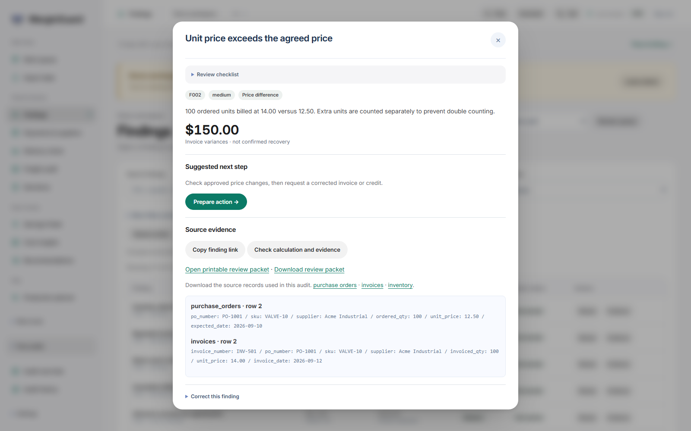
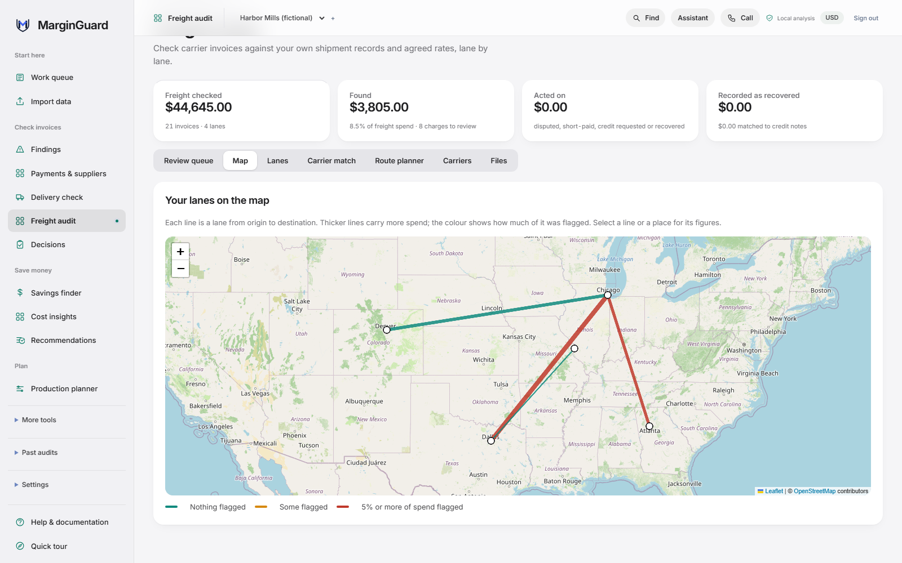

Invoice checks
Compares billed prices with agreed prices and billed quantities with orders and receipts. Repeated lines are flagged for you to inspect before anything is treated as a duplicate charge.
Invoice review and inventory planning
MarginGuard compares supplier invoices with purchase orders and receipts. It flags price and quantity differences and possible duplicates, and shows the source rows behind each one.
Imports CSV and Excel exports from Tally, QuickBooks Online and Xero. 14-day trial, no card required.
| Source | Reference | Unit price |
|---|---|---|
| Purchase order | PO-1042, row 8 | $10.00 |
| Supplier invoice | INV-3016, row 12 | $12.00 |
Needs review
Check whether the supplier used an approved price change.
| Source | Reference | Units |
|---|---|---|
| Net receipts | PO-1042, item AX-20 | 40 |
| Supplier invoice | INV-3016, row 12 | 60 |
Needs review
Check that all receipts and returns through the invoice date are on file.
| Line | Reference | Amount |
|---|---|---|
| Invoice row 12 | INV-3016, AX-20 | 60 × $12.00 |
| Invoice row 18 | INV-3016, AX-20 | 60 × $12.00 |
Needs review
Check whether both lines belong on the original invoice.
| Measure | Basis | Days |
|---|---|---|
| Stock coverage | 12 on hand, 3 used a day | 4 |
| Supplier lead time | Item AX-20, stock row 6 | 7 |
Needs review
Check current demand and incoming deliveries.
Confirm suppliers billed the agreed price for what actually arrived, and see which items may run short.
Hold questionable lines before payment, and catch invoices paid twice or above their amount.
See where margin is leaking across suppliers, carriers and stock, without a full ERP project.
Each finding links back to the order, invoice and receipt rows it came from, so you can check the originals before acting on it.
Compares billed prices with agreed prices and billed quantities with orders and receipts. Repeated lines are flagged for you to inspect before anything is treated as a duplicate charge.
Shows how long stock may last and where you hold more than your target.
Compare supplier offers on cost and timing, or test a product mix against the cash and capacity limits you enter.
Record what you decided and why. Later, log what happened and compare it with what you expected.
An optional AI assistant can explain the evidence or find a past review. Decisions are approved in the workspace, and orders, messages and payments are handled outside it.
Screens from the sample workspace, which uses fictional suppliers and records.



Every check is a fixed calculation over your own records. A check runs when your files include the columns it needs, so adding optional columns adds more checks.
| Check | Flags a line when | Uses |
|---|---|---|
| Unit price | The billed price is above the price on the purchase order | Orders |
| Quantity | More units are billed than were received, after returns | Orders and receipts |
| Duplicate lines | The same item and amount appear more than once | Invoices |
| Tax | Tax is above the line’s own rate, or above the rate the supplier usually charges | Tax columns |
| Freight | Freight is above the amount on the order, or charged twice for one order | Freight columns |
| Bank details | A supplier’s bank account changes, or two suppliers share one account | Bank columns |
| Payment terms | The due date is at least five days sooner than the supplier’s usual terms | Invoice history |
| Payments | An invoice is paid twice, paid above its amount, or paid while a finding is still open | Payment records |
Bank accounts are shown by their last four characters only.
Two more views use the same records: one for carrier invoices, one for how your supplier costs are moving.
Upload carrier invoices as CSV. Shipment records and agreed rates are optional and unlock more checks.
| Lane | Loads | Flagged |
|---|---|---|
| Chicago, IL to Dallas, TX | 42 | $1,180 |
| Atlanta, GA to Columbus, OH | 27 | $640 |
| Reno, NV to Fresno, CA | 15 | $0 |
Reads the invoice lines you have already saved. Nothing extra to upload.
| Price changes | +$3,420 |
| Buying more or less | −$1,150 |
| New items | +$880 |
| Dropped items | −$410 |
| Total change | +$2,740 |
Small billing differences are easy to miss when they are spread across hundreds of invoices. This film follows one month-end review.
Try the sample audit first, then upload your own records when you’re ready.
Upload CSV or Excel files, match the columns and check the data before saving.
Open a flagged item and check the records and calculation behind it.
Save a decision and update it when you know what happened.
Live ERP sync is in development.
See the column layout before you export anything. Each file has a few fictional rows. Your own files can use different column names; you match them when you import.
The audit overview keeps a running total of what was found, what you raised with suppliers, and the credits or refunds you recorded. Each finding is counted once.
Sample workspace
Findings come from fixed rules you can read in the finding itself. The AI assistant is optional, and it can’t approve a decision for you.
Dispute letters and quote requests are drafts. You copy them and send them yourself, to the people you choose.
Scanned or PDF invoices are never read into an audit automatically. They go to document assistance, where you check each page against the original.
Turn on two-step verification, so signing in needs a code from an authenticator app as well as your password.
Recent releases. MarginGuard is updated often, and each release is tested before it goes live.
Carrier invoice exports with different headers, date formats and delimiters now import without editing.
See lanes where a carrier you already use cost less, draft quote requests, and estimate multi-stop routes.
Checks carrier invoices against shipments and agreed rates, maps each lane, and drafts dispute letters.
Why spend moved, 90-day price trends, and how much depends on a single supplier.
Protect your sign-in with a code from an authenticator app.
Tax, freight, bank detail changes, shortened payment terms and duplicate payments.
Something else? Email me.
Supplier invoices and purchase orders, as CSV or Excel. Receipts, stock levels and payment records are optional and add more checks. You match the columns when you import, so the files don’t need a fixed layout.
Export your bills and purchase orders from Tally, QuickBooks Online or Xero and import the files. A live connection to accounting systems is in development.
No. A finding means two records disagree. There may be a reason, such as an approved price change or a receipt that hasn’t been entered yet. Check the source rows before you raise it with the supplier.
Yes. Every new workspace can open a sample audit built on fictional records, so you can see each check before uploading anything.
On the computer that runs MarginGuard, which is my own PC. Only upload business records you have permission to use.
The preview is free while paid billing is unavailable. The planned price is $9 USD per month, and a new workspace starts with a 14-day trial with no card required.
Tell me about your suppliers and the records you keep. I read every request and reply by email.
No card required. The preview stays free while paid billing is unavailable.
$9 per month planned price, in USD
Create your workspaceI’m Tirthal Kothari. I built MarginGuard and host it on my own PC, so availability depends on that computer staying online. Start with the sample, and upload business records only if you have permission to use them.
Get in touch